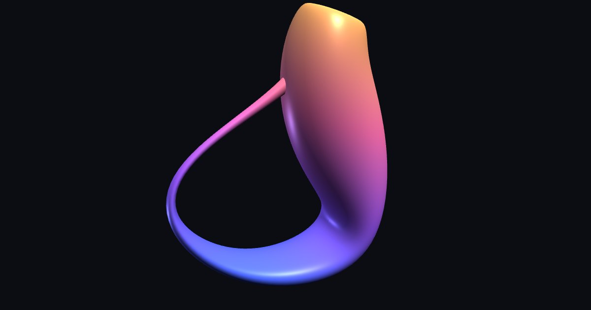

Math Explorer · Surfaces
Surfaces: the Möbius band, Klein bottle, minimal surfaces in 3D
One-sided surfaces, soap films and saddles, drawn exactly from their formulas.

A Möbius band has only one side: a beetle walking along it comes back upside down without ever crossing an edge. The Klein bottle and Boy's surface go further, with no edge at all and still only one side. Math Explorer draws 23 surfaces from their exact formulas, coloured differently on each side so you can see where the sides join.
Minimal surfaces are the shapes soap films make: every point is balanced, curving one way as much as the other. The pseudosphere and Dini's surface curve the other way everywhere, the geometry of the hyperbolic plane. Every formula here was checked by measuring its curvature, and every one can be 3D printed.
Things to try
- Press G to walk along the Möbius band and come back on the other side
- Press N to cut a band down the middle and see what you get
- Look inside the Klein bottle, which passes through itself
- Turn Costa's minimal surface, discovered in 1982
- Print a one-sided surface you can hold in your hand